11 交流
11.1 引言
在 章节 10 中，你学习了如何将图形用作探索工具。当 你制作探索性图形时，你甚至在查看之前就知道图中将显示哪些变量。你 为了某个目的制作每个图形，可以快速查看它，然后移至下一个图形。在 大多数分析过程中，你会生成数十个或数百个图形，其中大多数会立即被丢弃。
现在你理解了你的数据，你需要将你的理解与他人交流。你 的听众可能不具备你的背景知识，也不会对数据投入太多关注。为 了帮助其他人快速建立对数据的良好心理模型，你需要在使图形尽可能具有自解释性方面投入大量努力。在 本章中，你将学习ggplot2提供的一些工具来做到这一点。
本章重点关注创建良好图形所需的工具。我 们假设你知道你想要什么，只是需要知道如何去做。因 此，我们强烈建议将本章与一本优秀的通用可视化书籍结合使用。我 们特别喜欢Albert Cairo的《The Truthful Art》。这 本书不教授创建可视化的机制，而是专注于你需要考虑的内容以创建有效的图形。
11.1.1 必要条件
在本章中我们将再次专注于ggplot2。我 们还将使用dplyr进行一些数据操作，使用scales来覆盖默认的刻度、标签、变换和调色板，以及一些ggplot2的扩展包，包括Kamil Slowikowski的ggrepel（https://ggrepel.slowkow.com）和Thomas Lin Pedersen的patchwork（https://patchwork.data-imaginist.com）。如 果你还没有这些包，别忘了使用install.packages()来安装它们。
11.2 标签
将探索性图形转换为说明性图形的最简单起点是使用好的标签。你 可以使用labs()函数来添加标签。
ggplot(mpg, aes(x = displ, y = hwy)) +
geom_point(aes(color = class)) +
geom_smooth(se = FALSE) +
labs(
x = "Engine displacement (L)",
y = "Highway fuel economy (mpg)",
color = "Car type",
title = "Fuel efficiency generally decreases with engine size",
subtitle = "Two seaters (sports cars) are an exception because of their light weight",
caption = "Data from fueleconomy.gov"
)![Scatterplot of highway fuel efficiency versus engine size of cars, where points are colored according to the car class. A smooth curve following the trajectory of the relationship between highway fuel efficiency versus engine size of cars is overlaid. The x-axis is labelled "Engine displacement (L)" and the y-axis is labelled "Highway fuel economy (mpg)". The legend is labelled "Car type". The plot is titled "Fuel efficiency generally decreases with engine size". The subtitle is "Two seaters (sports cars) are an exception because of their light weight" and the caption is "Data from fueleconomy.gov".](communication_files/figure-html/unnamed-chunk-3-1.png)
图形的标题（title）是为了概括主要发现，避免仅描述图形内容的标题，例如“发动机排量和燃油经济性的散点图形”。
如果你需要添加更多文本，还有另外两个有用的标签：副标题（subtitle）以较小的字体在标题下方添加更多细节，而图注（caption）在图形的右下角添加文本，通常用于描述数据的来源。你 还可以使用labs()函数来替换轴和图例的标题。通 常，最好将简短的变量名替换为更详细的描述，并包含单位。
可以使用数学方程代替文本字符串。只 需将""替换为quote()，并查阅?plotmath中关于可用选项的信息。
df <- tibble(
x = 1:10,
y = cumsum(x^2)
)
ggplot(df, aes(x, y)) +
geom_point() +
labs(
x = quote(x[i]),
y = quote(sum(x[i] ^ 2, i == 1, n))
)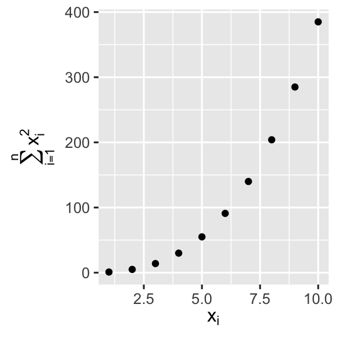
11.2.1 练习
创建一个包含自定义标题、副标题、图注、
x轴、y轴和颜色标签的关于燃油经济数据的图形。C reate one plot on the fuel economy data with customizedtitle,subtitle,caption,x,y, andcolorlabels.-
使用燃油经济数据重新创建以下图形。请 注意，点和形状的颜色根据传动系统的类型而变化。
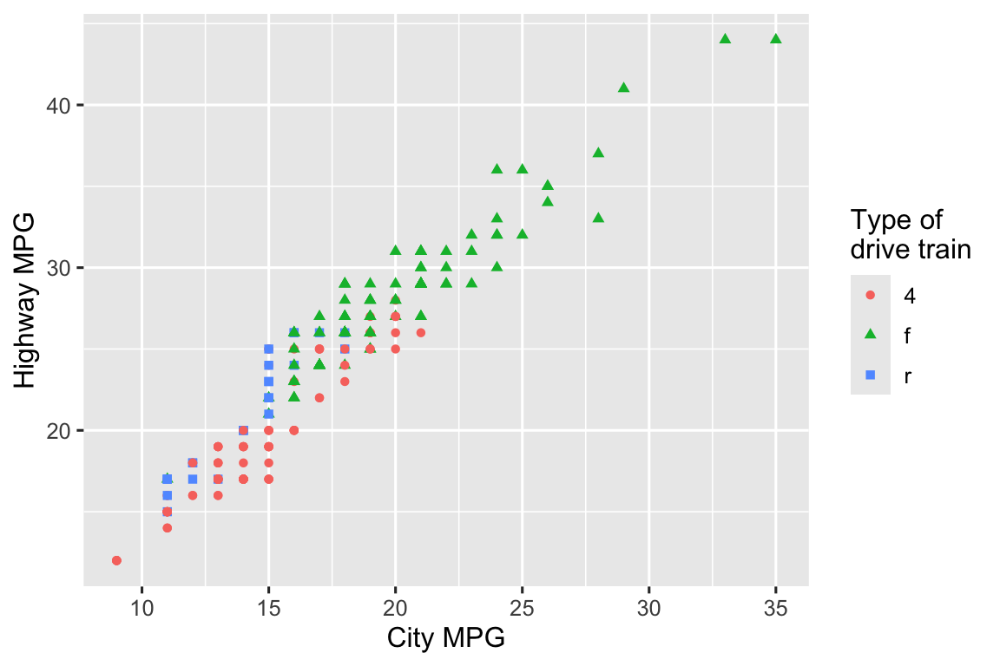
选择你在过去一个月内创建的一个探索性图形，并添加有信息量的标题，以便其他人更容易理解。
11.3 注释
除了标记图形的主要组件之外，标记单个观测或观测组通常也很有用。你 可以使用的第一个工具是geom_text()。g eom_text()类似于geom_point()，但它有一个额外的美学属性：label。这 使得在你的图形中添加文本标签成为可能。
标签的来源有两种可能。首 先，你可能有一个提供标签的tibble。在 下面的图形中，我们提取了每种驱动类型中发动机尺寸最大的汽车，并将它们的信息保存为一个名为label_info的新数据框。
label_info <- mpg |>
group_by(drv) |>
arrange(desc(displ)) |>
slice_head(n = 1) |>
mutate(
drive_type = case_when(
drv == "f" ~ "front-wheel drive",
drv == "r" ~ "rear-wheel drive",
drv == "4" ~ "4-wheel drive"
)
) |>
select(displ, hwy, drv, drive_type)
label_info
#> # A tibble: 3 × 4
#> # Groups: drv [3]
#> displ hwy drv drive_type
#> <dbl> <int> <chr> <chr>
#> 1 6.5 17 4 4-wheel drive
#> 2 5.3 25 f front-wheel drive
#> 3 7 24 r rear-wheel drive然后，我们使用这个新的数据框直接标记这三个组，用直接放在图形上的标签替换图例。通 过使用fontface和size参数，我们可以自定义文本标签的外观。它 们比图形上其余文本的字体更大且加粗。（ theme(legend.position = "none" 会关闭所有图例，我们稍后会详细讨论它。）
ggplot(mpg, aes(x = displ, y = hwy, color = drv)) +
geom_point(alpha = 0.3) +
geom_smooth(se = FALSE) +
geom_text(
data = label_info,
aes(x = displ, y = hwy, label = drive_type),
fontface = "bold", size = 5, hjust = "right", vjust = "bottom"
) +
theme(legend.position = "none")
#> `geom_smooth()` using method = 'loess' and formula = 'y ~ x'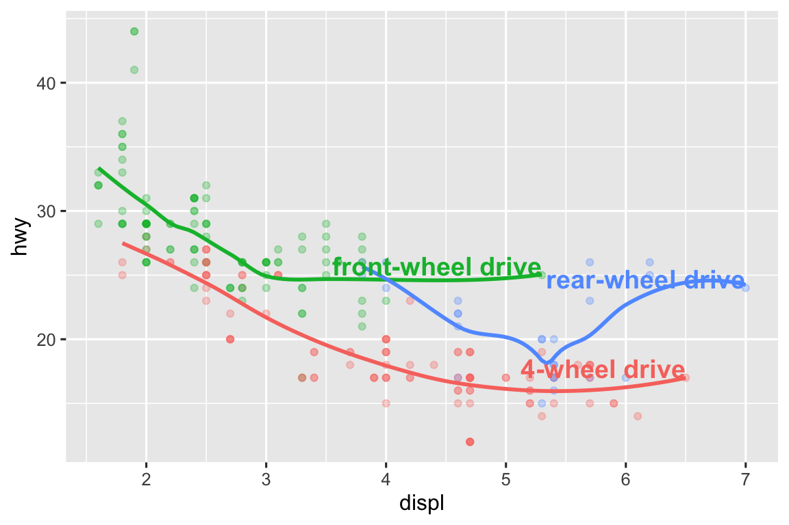
请注意使用hjust（水平对齐）和vjust（垂直对齐）来控制标签的对齐方式。
但是，我们上面制作的带有注释的图形很难阅读，因为标签相互重叠，并且与点重叠。我 们可以使用ggrepel包中的geom_label_repel()函数来解决这两个问题。这 个包会自动调整标签的位置，以避免它们重叠：
ggplot(mpg, aes(x = displ, y = hwy, color = drv)) +
geom_point(alpha = 0.3) +
geom_smooth(se = FALSE) +
geom_label_repel(
data = label_info,
aes(x = displ, y = hwy, label = drive_type),
fontface = "bold", size = 5, nudge_y = 2
) +
theme(legend.position = "none")
#> `geom_smooth()` using method = 'loess' and formula = 'y ~ x'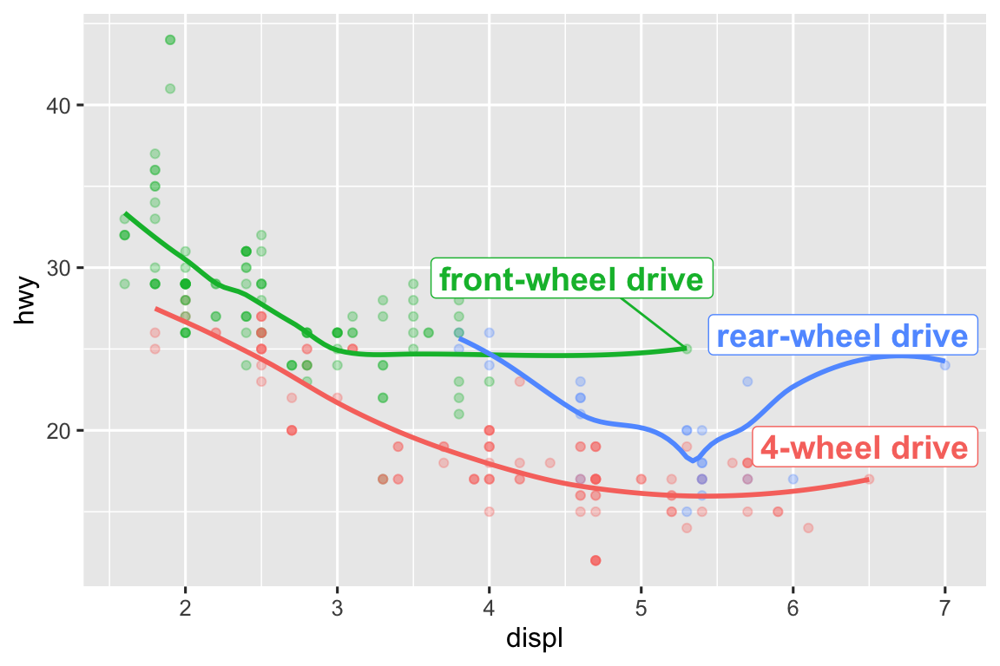
你还可以使用相同的方法来突出显示ggrepel包中geom_text_repel()函数在图形上的某些点。请 注意这里使用的另一个实用的技巧：我们添加了一层大且空心的点作为第二层，以进一步突出显示带有标签的点。
potential_outliers <- mpg |>
filter(hwy > 40 | (hwy > 20 & displ > 5))
ggplot(mpg, aes(x = displ, y = hwy)) +
geom_point() +
geom_text_repel(data = potential_outliers, aes(label = model)) +
geom_point(data = potential_outliers, color = "red") +
geom_point(
data = potential_outliers,
color = "red", size = 3, shape = "circle open"
)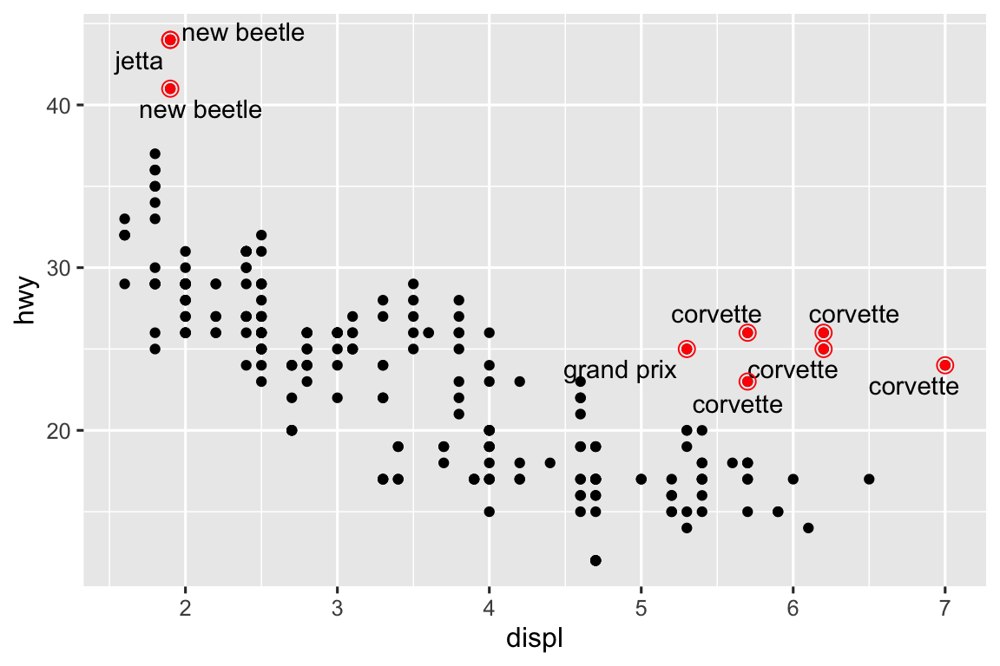
请记住，除了geom_text()和geom_label()之外，ggplot2中还有许多其他geoms可用于帮助你注释你的图形。这 里有几个想法：
使用
geom_hline()和geom_vline()来添加参考线。我 们经常使它们加粗（linewidth = 2）和为白色（color = white），并在主要数据层下面绘制它们。这 使得它们易于查看，而不会分散对数据的注意力。使用
geom_rect()在感兴趣的点上画一个矩形。矩 形的边界由美学属性xmin,xmax,ymin,ymax定义。另 外，请查看ggforce包，特别是geom_mark_hull()，它允许你使用凸包来注释点的子集。使用带有
arrow参数的geom_segment()来用箭头吸引对某个点的注意。使 用美学属性x和y定义起始位置，使用xend和yend定义结束位置。
另一个用于向图形添加注释的实用函数是annotate()。作 为一般规则，geoms通常用于突出显示数据的一个子集，而annotate()则用于向图形添加一个或少数几个注释元素。
为了演示如何使用annotate()，让我们创建一些文本并将其添加到我们的图形中。文 本有点长，所以我们将使用stringr::str_wrap()来根据每行所需的字符数自动添加换行符：
trend_text <- "Larger engine sizes tend to have lower fuel economy." |>
str_wrap(width = 30)
trend_text
#> [1] "Larger engine sizes tend to\nhave lower fuel economy."然后，我们添加两层注释：一层使用标签geom，另一层使用线段geom。两 者中的x和y美学属性定义了注释应该从哪里开始，而线段注释中的xend和yend美学属性定义了线段的结束位置。还 请注意，线段被设置为箭头的样式。
ggplot(mpg, aes(x = displ, y = hwy)) +
geom_point() +
annotate(
geom = "label", x = 3.5, y = 38,
label = trend_text,
hjust = "left", color = "red"
) +
annotate(
geom = "segment",
x = 3, y = 35, xend = 5, yend = 25, color = "red",
arrow = arrow(type = "closed")
)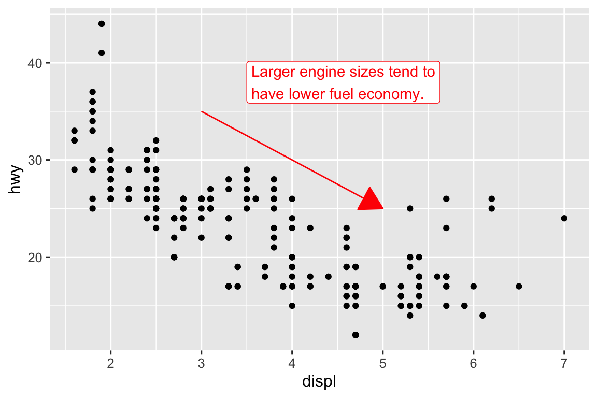
注释是一种强大的工具，用于交流你的可视化的主要内容和有趣特性。唯 一的限制是你的想象力（以及你耐心地调整注释位置以达到美观的耐心）！
11.3.1 练习
使用
geom_text()并通过设置接近边界的坐标值来在图的四个角落放置文本。使用
annotate()在最后一个图的中心添加一个点，而无需创建一个tibble。自 定义点的形状、大小或颜色。geom_text()中的标签是如何与分面交互的？你 如何给单个分面添加一个标签？你 如何在每个分面中添加不同的标签？（ 提示：考虑传递给geom_text()的数据集）geom_label()的哪些参数控制背景框的外观？arrow()函数的四个参数是什么？它 们是如何工作的？创 建一系列图表来展示最重要的选项。
11.4 比例尺
使图形更易于传达信息的第三种方法是调整比例尺。比 例尺控制着美学映射如何以视觉形式展现。
11.4.1 默认比例尺
通常，ggplot2 会自动为你添加比例尺。例 如，当你输入：
ggplot(mpg, aes(x = displ, y = hwy)) +
geom_point(aes(color = class))ggplot2 在后台自动添加默认比例尺:
ggplot(mpg, aes(x = displ, y = hwy)) +
geom_point(aes(color = class)) +
scale_x_continuous() +
scale_y_continuous() +
scale_color_discrete()请注意比例尺的命名方案：以scale_开头，后面是美学的名称，然后是_，再然后是比例尺的名称。默 认的比例尺是根据它们与之对齐的变量类型来命名的：连续、离散、日期时间或日期。s cale_x_continuous()将displ的数值以连续的数字线形式放在 x 轴上，scale_color_discrete()为每种车型类别选择颜色，等等。下 面将介绍许多非默认的比例尺。
默认的比例尺已经被精心选择，以便为广泛的输入提供良好的工作效果。然 而，你可能想要出于两个原因覆盖默认值：
- 你可能想要调整默认比例尺的一些参数。这允许你做一些事情，比如改变轴上的刻度或图例上的键标签。
- 你可能想要完全替换比例尺，并使用完全不同的算法。通常，由于你更了解数据，所以你可以做得比默认值更好。
轴刻度和图例键
轴和图例统称为“指南”。轴 用于 x 和 y 美学；图例用于其他所有内容。
有两个主要参数影响轴上的刻度和图例上的键的外观：breaks 和 labels。b reaks 控制刻度的位置或与键关联的值。l abels 控制与每个刻度/键关联的文本标签。b reaks 的最常见用法是覆盖默认选择：
11.4.2 轴刻度和图例键
轴和图例统称为“指南”。轴 用于 x 和 y 美学；图例用于其他所有内容。
有两个主要参数影响轴上的刻度和图例上的键的外观：breaks和labels。b reaks控制刻度的位置或与键关联的值。l abels控制与每个刻度/键关联的文本标签。b reaks的最常见用法是覆盖默认选择：
ggplot(mpg, aes(x = displ, y = hwy, color = drv)) +
geom_point() +
scale_y_continuous(breaks = seq(15, 40, by = 5)) 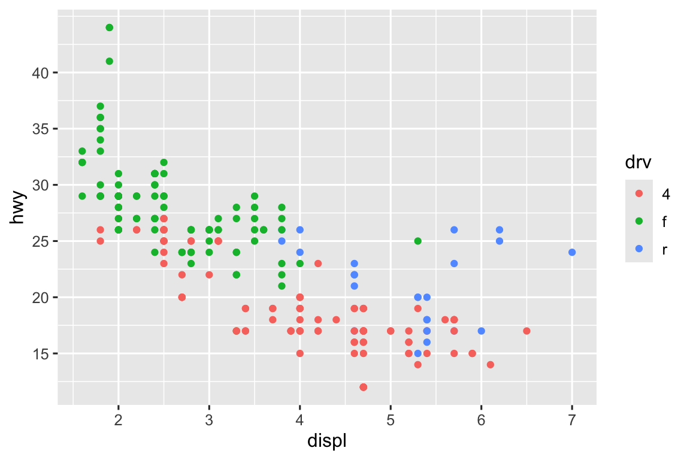
你可以以相同的方式使用labels（一个与breaks相同长度的字符向量），但你也可以将其设置为NULL以完全抑制标签的显示。这 在地图或发布图表时非常有用，因为在这些情况下你可能无法分享绝对数值。你 还可以使用breaks和labels来控制图例的外观。对 于分类变量的离散比例尺，labels可以是一个命名列表，其中列出了现有水平名称以及为它们指定的标签。
ggplot(mpg, aes(x = displ, y = hwy, color = drv)) +
geom_point() +
scale_x_continuous(labels = NULL) +
scale_y_continuous(labels = NULL) +
scale_color_discrete(labels = c("4" = "4-wheel", "f" = "front", "r" = "rear"))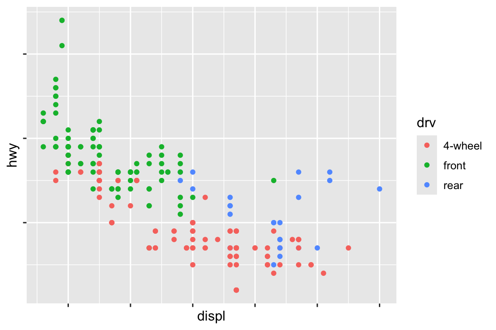
labels参数 scales包中的标签函数结合使用，还可用于将数字格式化为货币、百分比等。左 边的图形显示了使用label_dollar()的默认标签，它添加了美元符号和千位分隔符逗号。右 边的图形通过进一步定制，将美元值除以1,000并添加后缀“K”（代表“千”），以及添加自定义刻度。请 注意，breaks是基于数据的原始尺度。
# Left
ggplot(diamonds, aes(x = price, y = cut)) +
geom_boxplot(alpha = 0.05) +
scale_x_continuous(labels = label_dollar())
# Right
ggplot(diamonds, aes(x = price, y = cut)) +
geom_boxplot(alpha = 0.05) +
scale_x_continuous(
labels = label_dollar(scale = 1/1000, suffix = "K"),
breaks = seq(1000, 19000, by = 6000)
)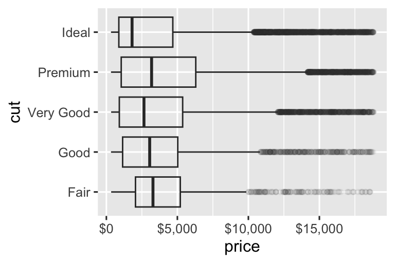
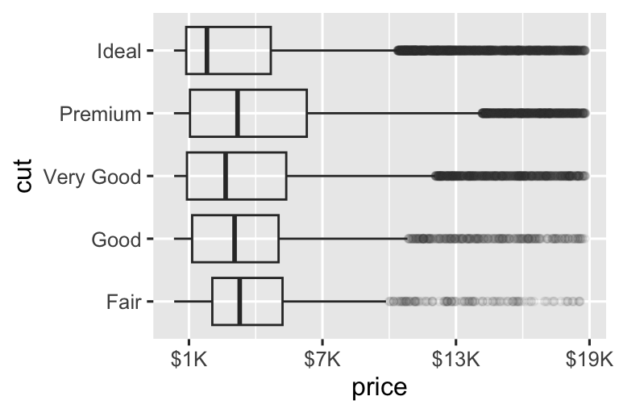
另一个方便的标签函数是 label_percent():
ggplot(diamonds, aes(x = cut, fill = clarity)) +
geom_bar(position = "fill") +
scale_y_continuous(name = "Percentage", labels = label_percent())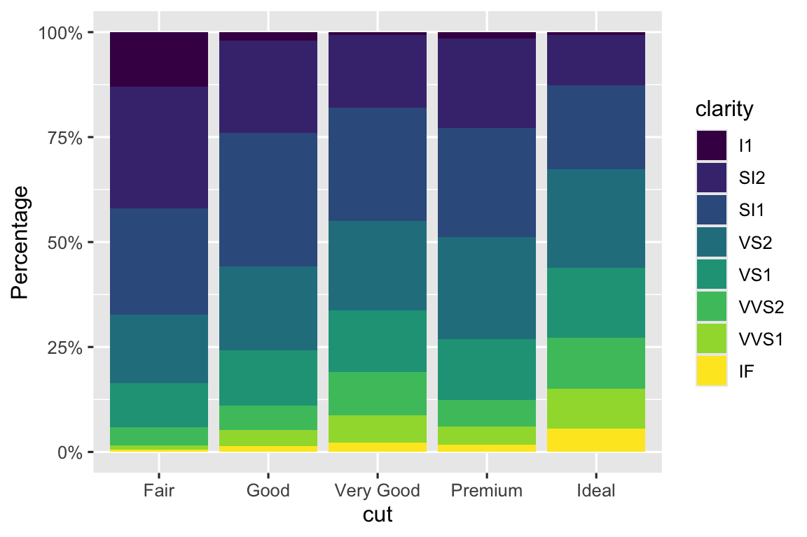
breaks的另一个用途是当你的数据点相对较少，并且希望准确地突出显示观测发生的位置时。例 如，这张图显示了每位美国总统任期的开始和结束时间。
presidential |>
mutate(id = 33 + row_number()) |>
ggplot(aes(x = start, y = id)) +
geom_point() +
geom_segment(aes(xend = end, yend = id)) +
scale_x_date(name = NULL, breaks = presidential$start, date_labels = "'%y")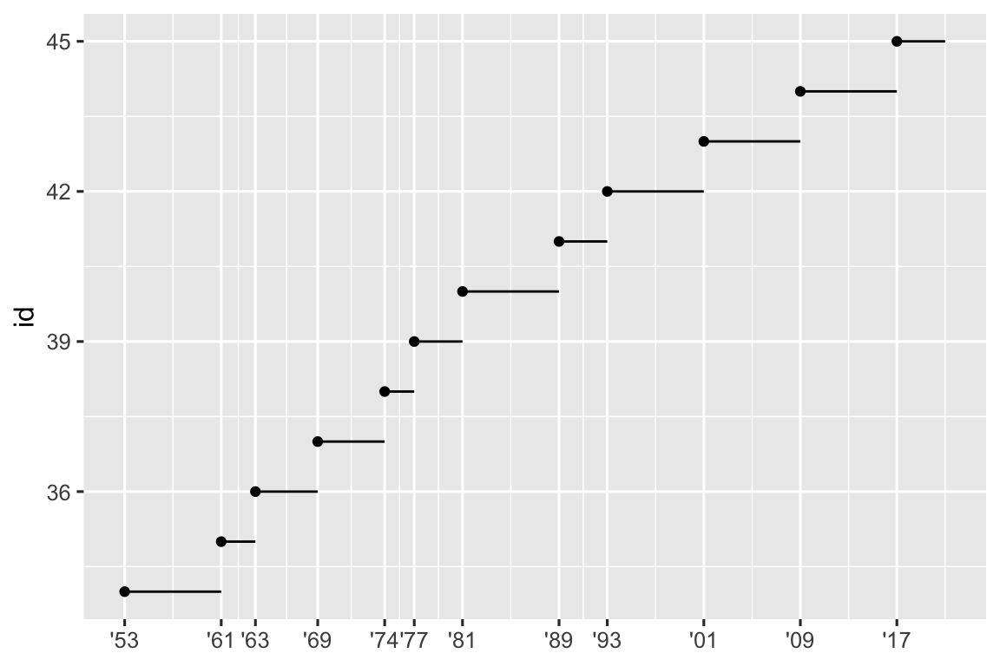
请注意，对于breaks参数我们提取了start变量作为一个向量，即presidential$start，因为我们不能为这个参数进行美学映射。另 外请注意，对于日期和日期时间比例尺的breaks和labels的指定略有不同：
date_labels需要一个格式规范，其形式与parse_datetime()相同。date_breaks（这里未展示）需要一个字符串，如 “2 days” 或 “1 month”。
11.4.3 图例布局
你通常会使用breaks和labels来调整坐标轴。虽 然它们也适用于图例，但还有一些你更可能使用的其他技术。
要控制图例的整体位置，你需要使用theme()设置。我 们将在本章末尾再次回到主题设置上，但简而言之，它们控制图中非数据部分的内容。主 题设置legend.position控制图例的绘制位置：
base <- ggplot(mpg, aes(x = displ, y = hwy)) +
geom_point(aes(color = class))
base + theme(legend.position = "right") # the default
base + theme(legend.position = "left")
base +
theme(legend.position = "top") +
guides(color = guide_legend(nrow = 3))
base +
theme(legend.position = "bottom") +
guides(color = guide_legend(nrow = 3))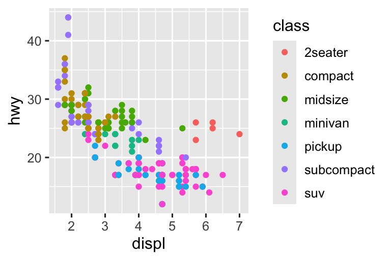
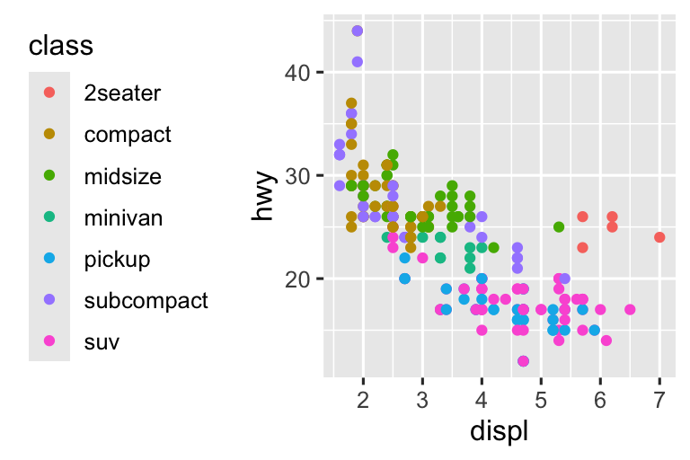
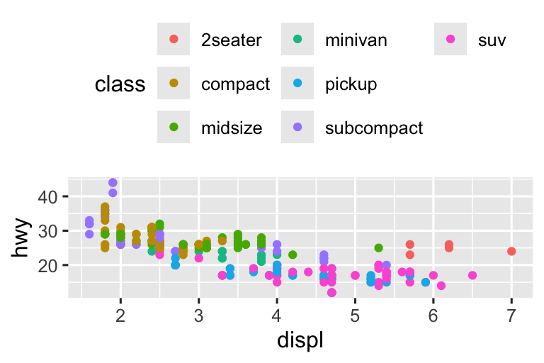
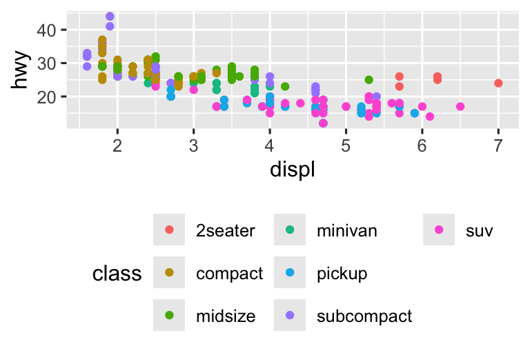
如果你的图是短而宽的，可以将图例放在顶部或底部；如果它是高而窄的，可以将图例放在左侧或右侧。你 还可以使用legend.position = "none"来完全抑制图例的显示。
要控制单个图例的显示，请使用guides()搭配guide_legend()或guide_colorbar()。以 下示例展示了两个重要的设置：使用nrow控制图例使用的行数，以及通过覆盖其中一个美学属性来使点变得更大。这 在你在图上使用低透明度（alpha）来显示许多点时特别有用。
ggplot(mpg, aes(x = displ, y = hwy)) +
geom_point(aes(color = class)) +
geom_smooth(se = FALSE) +
theme(legend.position = "bottom") +
guides(color = guide_legend(nrow = 2, override.aes = list(size = 4)))
#> `geom_smooth()` using method = 'loess' and formula = 'y ~ x'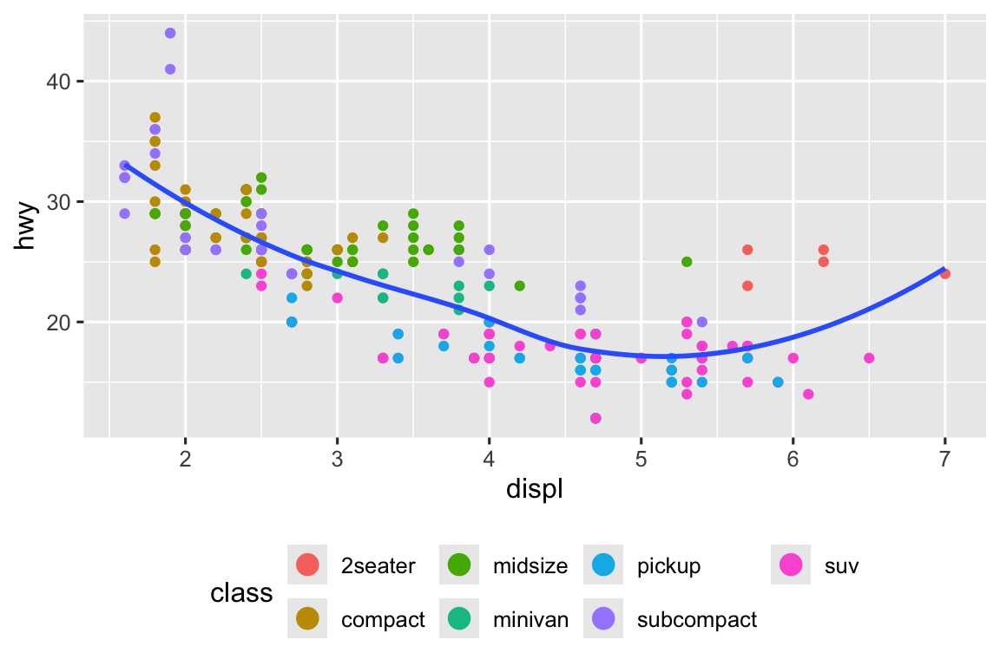
11.4.4 替换比例尺
除了微调一些细节之外，你还可以完全替换比例尺。有 两种类型的比例尺你可能最想要替换：连续位置比例尺和颜色比例尺。幸 运的是，其他美学属性的原理都是一样的，所以一旦你掌握了位置和颜色，你就能迅速掌握其他比例尺的替换。
绘制变量的变换是非常有用的。例 如，如果我们对钻石的重量（carat）和价格（price）进行对数变换，就能更容易地看到它们之间的精确关系：
# Left
ggplot(diamonds, aes(x = carat, y = price)) +
geom_bin2d()
# Right
ggplot(diamonds, aes(x = log10(carat), y = log10(price))) +
geom_bin2d()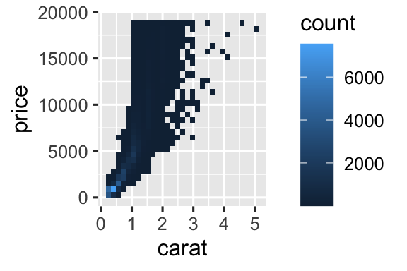
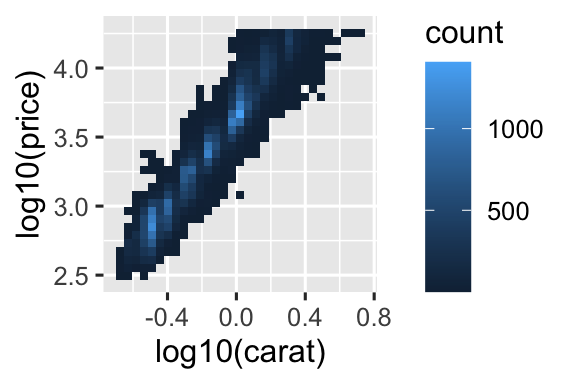
然而，这种变换的缺点是坐标轴现在被标记为变换后的值，这使得很难解读该图。与 其在美学映射中进行变换，我们可以选择在刻度上进行变换。从 视觉上看，两者是相同的，只是坐标轴是按照原始数据的比例尺进行标记的。
ggplot(diamonds, aes(x = carat, y = price)) +
geom_bin2d() +
scale_x_log10() +
scale_y_log10()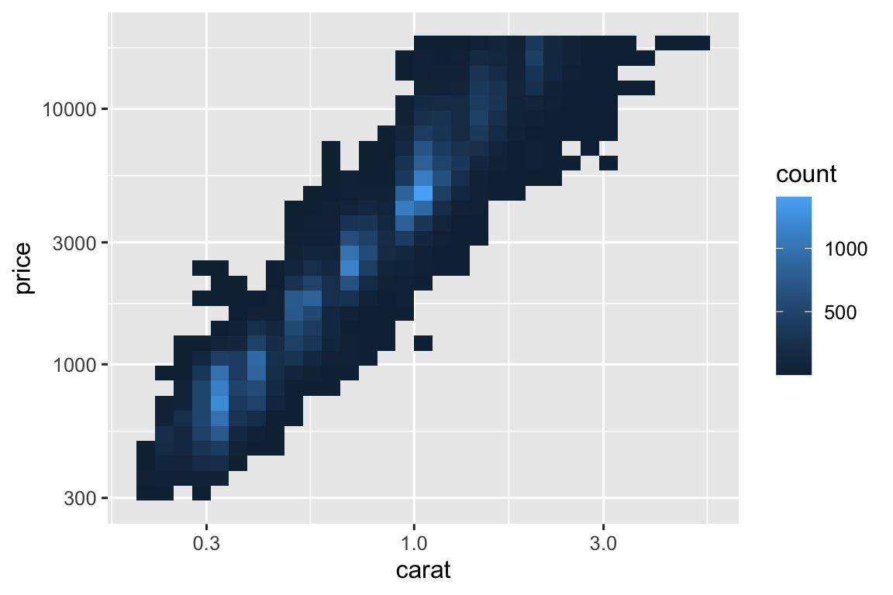
另一个经常需要自定义的比例尺是颜色。默 认的分类比例尺会选择在色轮上均匀分布的颜色。一 个有用的替代方案是 ColorBrewer 比例尺，它经过人工调整以更好地适应患有常见色盲类型的人。下 面两个图看起来相似，但红色和绿色的色调差异足够大，以至于右边的点即使对于患有红绿色盲的人也能区分开来1。
ggplot(mpg, aes(x = displ, y = hwy)) +
geom_point(aes(color = drv))
ggplot(mpg, aes(x = displ, y = hwy)) +
geom_point(aes(color = drv)) +
scale_color_brewer(palette = "Set1")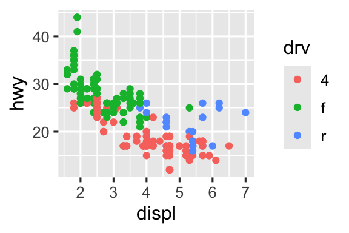
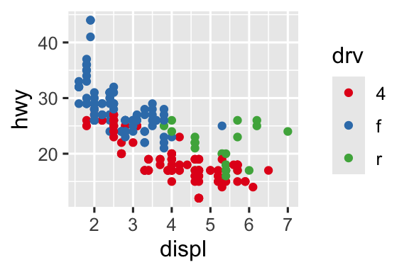
不要忘记提高可访问性的更简单的技术。如 果只有几种颜色，你可以添加一个冗余的形状映射。这 也有助于确保你的图形在黑白模式下也能被解读。
ggplot(mpg, aes(x = displ, y = hwy)) +
geom_point(aes(color = drv, shape = drv)) +
scale_color_brewer(palette = "Set1")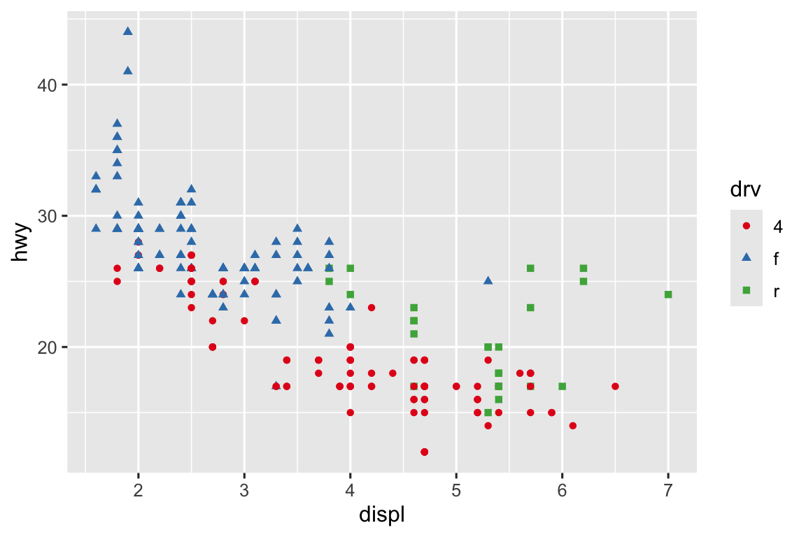
ColorBrewer 比例尺的文档可以在线查看，网址为https://colorbrewer2.org/ ，并通过 Erich Neuwirth 的 RColorBrewer 包在 R 中提供。@ fig-brewer 显示了所有调色板的完整列表。如 果你的分类值是有序的，或者有一个“中间值”，那么顺序（顶部）和发散（底部）调色板就特别有用。这 通常发生在你使用cut()函数将连续变量转换为分类变量时。
当你有一个预定义的值与颜色之间的映射时，使用scale_color_manual()。例 如，如果我们将总统党派映射到颜色，我们希望使用标准的红色代表共和党，蓝色代表民主党。为 这些颜色赋值的一种方法是使用十六进制颜色代码：
presidential |>
mutate(id = 33 + row_number()) |>
ggplot(aes(x = start, y = id, color = party)) +
geom_point() +
geom_segment(aes(xend = end, yend = id)) +
scale_color_manual(values = c(Republican = "#E81B23", Democratic = "#00AEF3"))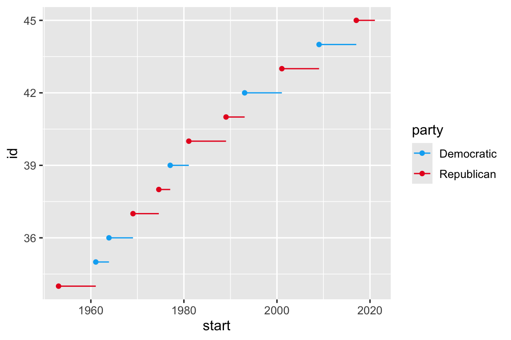
对于连续颜色，可以使用内置的scale_color_gradient()或scale_fill_gradient()。如 果有一个发散的比例尺，你可以使用scale_color_gradient2()。这 允许你可以给正数和负数分配不同的颜色。有 时，当你想区分高于或低于平均值的点时，这也很有用。
另一个选项是使用 viridis 颜色比例尺。其 设计者 Nathaniel Smith 和 Stéfan van der Walt 精心制作了连续的颜色方案，这些方案对于患有各种形式色盲的人以及在彩色和黑白模式下都是感知均匀的。这 些比例尺在 ggplot2 中作为连续（c）、离散（d）和分箱（b）调色板提供。
df <- tibble(
x = rnorm(10000),
y = rnorm(10000)
)
ggplot(df, aes(x, y)) +
geom_hex() +
coord_fixed() +
labs(title = "Default, continuous", x = NULL, y = NULL)
ggplot(df, aes(x, y)) +
geom_hex() +
coord_fixed() +
scale_fill_viridis_c() +
labs(title = "Viridis, continuous", x = NULL, y = NULL)
ggplot(df, aes(x, y)) +
geom_hex() +
coord_fixed() +
scale_fill_viridis_b() +
labs(title = "Viridis, binned", x = NULL, y = NULL)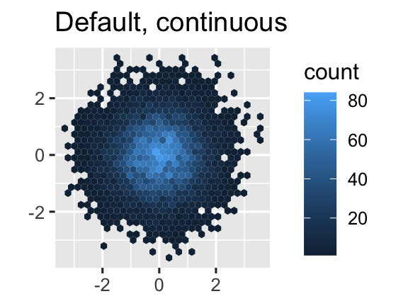
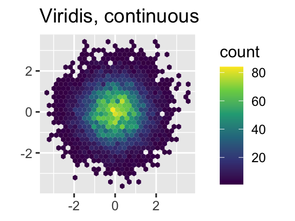
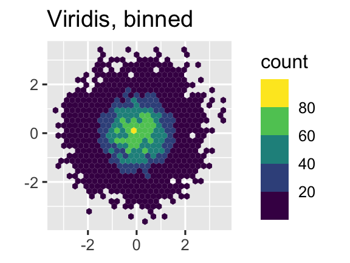
请注意，所有的颜色比例尺都有两种类型：scale_color_*()和scale_fill_*()，分别用于颜色和填充的美学（color scales 在英国和美国的拼写中都是可用的）。
11.4.5 缩放
控制图形的界限有三种方法：
- 调整要绘制的数据。
- 在每个比例尺中设置界限。
- 在
coord_cartesian()中设置xlim和ylim。
我们将在一系列图形中演示这些选项。左 侧的图形显示了发动机大小和燃油效率之间的关系，并按驱动类型着色。右 侧的图表显示了相同的变量，但仅绘制了部分数据。子 集数据已经影响了 x 和 y 比例尺以及平滑曲线。
# Left
ggplot(mpg, aes(x = displ, y = hwy)) +
geom_point(aes(color = drv)) +
geom_smooth()
# Right
mpg |>
filter(displ >= 5 & displ <= 6 & hwy >= 10 & hwy <= 25) |>
ggplot(aes(x = displ, y = hwy)) +
geom_point(aes(color = drv)) +
geom_smooth()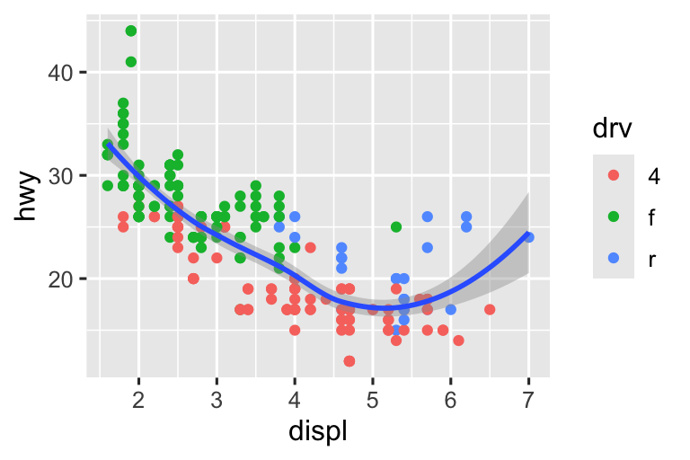
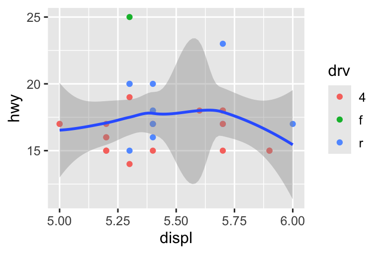
让我们比较下面两个图形，其中左侧的图形在单个比例尺上设置了界限，而右侧的图形在coord_cartesian()中设置了界限。我 们可以看到，减少界限的效果相当于对数据进行了子集选择。因 此，为了放大图中的某个区域，通常最好使用coord_cartesian()。
# Left
ggplot(mpg, aes(x = displ, y = hwy)) +
geom_point(aes(color = drv)) +
geom_smooth() +
scale_x_continuous(limits = c(5, 6)) +
scale_y_continuous(limits = c(10, 25))
# Right
ggplot(mpg, aes(x = displ, y = hwy)) +
geom_point(aes(color = drv)) +
geom_smooth() +
coord_cartesian(xlim = c(5, 6), ylim = c(10, 25))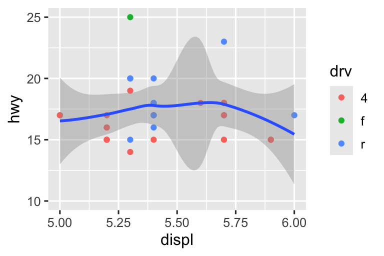
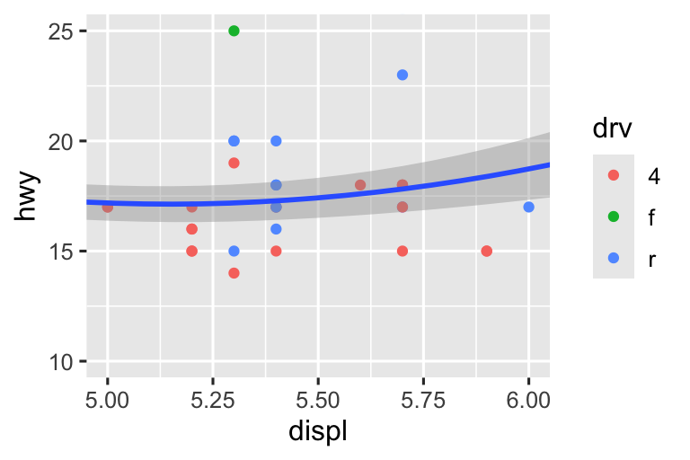
另一方面，如果你想扩展界限，比如在不同的图形之间匹配比例尺，那么在单个比例尺上设置limits通常更有用。例 如，如果我们提取两类汽车并分别绘制它们，则很难比较这些图形，因为三个比例尺（x轴、y轴和颜色美学）的范围都不相同。
suv <- mpg |> filter(class == "suv")
compact <- mpg |> filter(class == "compact")
# Left
ggplot(suv, aes(x = displ, y = hwy, color = drv)) +
geom_point()
# Right
ggplot(compact, aes(x = displ, y = hwy, color = drv)) +
geom_point()![On the left, a scatterplot of highway mileage vs. displacement of SUVs. On the right, a scatterplot of the same variables for compact cars. Points are colored by drive type for both plots. Among SUVs more of the cars are 4-wheel drive and the others are rear-wheel drive, while among compact cars more of the cars are front-wheel drive and the others are 4-wheel drive. SUV plot shows a clear negative relationship between higway mileage and displacement while in the compact cars plot the relationship is much flatter.](communication_files/figure-html/unnamed-chunk-30-1.png)
![On the left, a scatterplot of highway mileage vs. displacement of SUVs. On the right, a scatterplot of the same variables for compact cars. Points are colored by drive type for both plots. Among SUVs more of the cars are 4-wheel drive and the others are rear-wheel drive, while among compact cars more of the cars are front-wheel drive and the others are 4-wheel drive. SUV plot shows a clear negative relationship between higway mileage and displacement while in the compact cars plot the relationship is much flatter.](communication_files/figure-html/unnamed-chunk-30-2.png)
解决这个问题的一种方法是在多个图之间共享比例尺，并使用整个数据的limits来训练这些比例尺。
x_scale <- scale_x_continuous(limits = range(mpg$displ))
y_scale <- scale_y_continuous(limits = range(mpg$hwy))
col_scale <- scale_color_discrete(limits = unique(mpg$drv))
# Left
ggplot(suv, aes(x = displ, y = hwy, color = drv)) +
geom_point() +
x_scale +
y_scale +
col_scale
# Right
ggplot(compact, aes(x = displ, y = hwy, color = drv)) +
geom_point() +
x_scale +
y_scale +
col_scale![On the left, a scatterplot of highway mileage vs. displacement of SUVs. On the right, a scatterplot of the same variables for compact cars. Points are colored by drive type for both plots. Both plots are plotted on the same scale for highway mileage, displacement, and drive type, resulting in the legend showing all three types (front, rear, and 4-wheel drive) for both plots even though there are no front-wheel drive SUVs and no rear-wheel drive compact cars. Since the x and y scales are the same, and go well beyond minimum or maximum highway mileage and displacement, the points do not take up the entire plotting area.](communication_files/figure-html/unnamed-chunk-31-1.png)
![On the left, a scatterplot of highway mileage vs. displacement of SUVs. On the right, a scatterplot of the same variables for compact cars. Points are colored by drive type for both plots. Both plots are plotted on the same scale for highway mileage, displacement, and drive type, resulting in the legend showing all three types (front, rear, and 4-wheel drive) for both plots even though there are no front-wheel drive SUVs and no rear-wheel drive compact cars. Since the x and y scales are the same, and go well beyond minimum or maximum highway mileage and displacement, the points do not take up the entire plotting area.](communication_files/figure-html/unnamed-chunk-31-2.png)
在这种特定情况下，你可以简单地使用分面（faceting）来解决问题，但这种技术更具一般性，例如如果你想在报告的多个页面上分布图形，那么这种技术就很有用。
11.4.6 练习
-
为什么下面的代码不覆盖默认的比例尺?
df <- tibble( x = rnorm(10000), y = rnorm(10000) ) ggplot(df, aes(x, y)) + geom_hex() + scale_color_gradient(low = "white", high = "red") + coord_fixed() 每个比例尺的第一个参数是什么？它 和
labs()相比怎么样？-
通过以下方式更改总统任期的显示：
- 结合自定义颜色和x轴刻度的两个变体。
- 改进y轴的显示。
- 为每个任期标上总统的名字。
- 添加有信息量的图标签。
- 每4年设置一个刻度。（这看起来简单但实际上有些棘手！）
-
首先，创建以下图形。然 后，使用
override.aes修改代码以使图例更容易查看。ggplot(diamonds, aes(x = carat, y = price)) + geom_point(aes(color = cut), alpha = 1/20)
11.5 主题
最后，使用主题来定制图形中的非数据元素：
ggplot(mpg, aes(x = displ, y = hwy)) +
geom_point(aes(color = class)) +
geom_smooth(se = FALSE) +
theme_bw()
ggplot2包含了 图 11.2 中所示的八种主题，其中theme_gray()是默认主题。在 像ggthemes（https://jrnold.github.io/ggthemes）这样的附加包中，Jeffrey Arnold 提供了更多的主题。如 果你试图匹配特定的公司或期刊风格，你还可以创建自己的主题。

同样可以控制每个主题的各个组件，比如用于y轴的字体大小和颜色。我 们已经知道legend.position控制图例绘制的位置。还 有许多其他方面的图例可以用theme()函数进行定制。例 如，在下面的图中，我们改变了图例的方向，并在其周围加上了黑色边框。请 注意，主题的图例框和图形标题元素的定制是通过element_*()函数完成的。这 些函数指定非数据组件的样式，例如，在element_text()的face参数中，标题文本被加粗，图例边框颜色在element_rect()的color参数中定义。控 制标题和标题位置的主题元素分别是plot.title.position和plot.caption.position。在 下面的图中，这些被设置为 “plot”，以表示这些元素与整个绘图区域对齐，而不是与绘图面板（默认值）对齐。其 他一些有用的theme()组件用于更改标题和标题文本格式的放置。
ggplot(mpg, aes(x = displ, y = hwy, color = drv)) +
geom_point() +
labs(
title = "Larger engine sizes tend to have lower fuel economy",
caption = "Source: https://fueleconomy.gov."
) +
theme(
legend.position = c(0.6, 0.7),
legend.direction = "horizontal",
legend.box.background = element_rect(color = "black"),
plot.title = element_text(face = "bold"),
plot.title.position = "plot",
plot.caption.position = "plot",
plot.caption = element_text(hjust = 0)
)
#> Warning: A numeric `legend.position` argument in `theme()` was deprecated in ggplot2
#> 3.5.0.
#> ℹ Please use the `legend.position.inside` argument of `theme()` instead.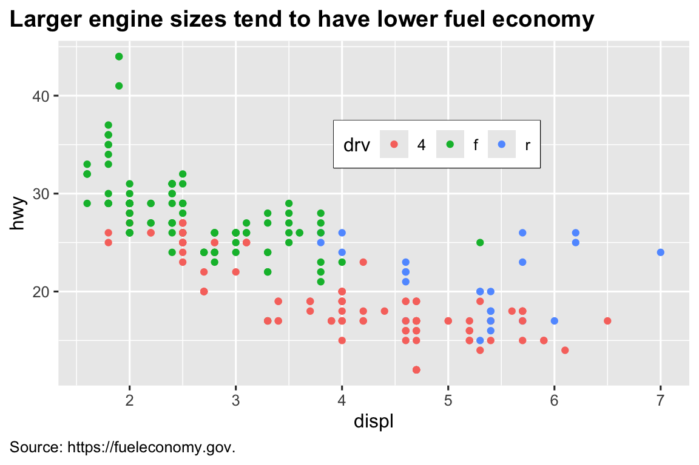
要了解theme()函数的所有组件的概述，请查看?theme的帮助文档。g gplot2 book 也是了解主题化完整细节的好地方。
For an overview of all theme() components, see help with ?theme. The ggplot2 book is also a great place to go for the full details on theming.
11.5.1 练习
- 从
ggthemes包中选择一个主题，并将其应用到你最后制作的图形上。 - 将你的图形的轴标签设置为蓝色并加粗。
11.6 布局
到目前为止，我们讨论了如何创建和修改单个图形。但 是，如果你有多个图形，并希望以某种方式将它们排列在一起怎么办？p atchwork包允许你将单独的图形组合到同一个图形中。在 本章的前面部分，我们已经加载了这个包。
要将两个图形并排放置，你只需将它们加在一起。请 注意，你首先需要创建图形并将它们保存为对象（在以下示例中，它们被称为p1和p2）。然 后，你使用+将它们并排放置。
p1 <- ggplot(mpg, aes(x = displ, y = hwy)) +
geom_point() +
labs(title = "Plot 1")
p2 <- ggplot(mpg, aes(x = drv, y = hwy)) +
geom_boxplot() +
labs(title = "Plot 2")
p1 + p2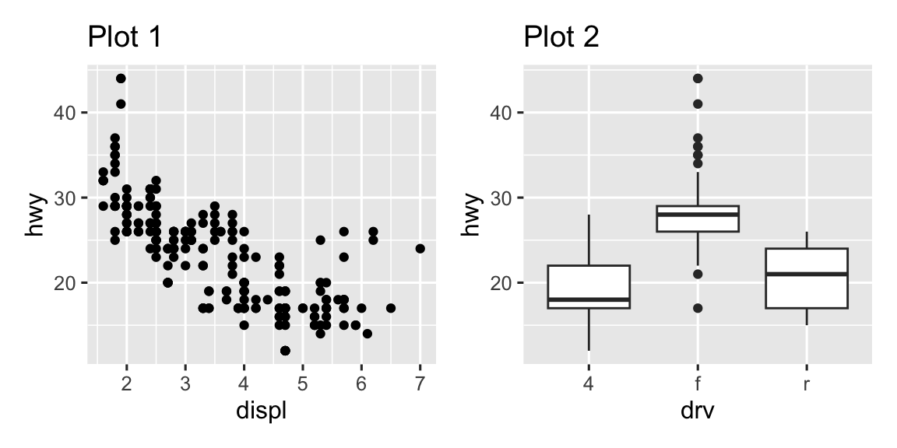
需要注意的是，在上面的代码块中，我们并没有使用patchwork包中的新函数。相 反，该包为+运算符添加了新的功能。
你还可以使用patchwork创建复杂的图形布局。在 以下示例中，|将p1和p3并排放置，而/将p2移动到下一行。
p3 <- ggplot(mpg, aes(x = cty, y = hwy)) +
geom_point() +
labs(title = "Plot 3")
(p1 | p3) / p2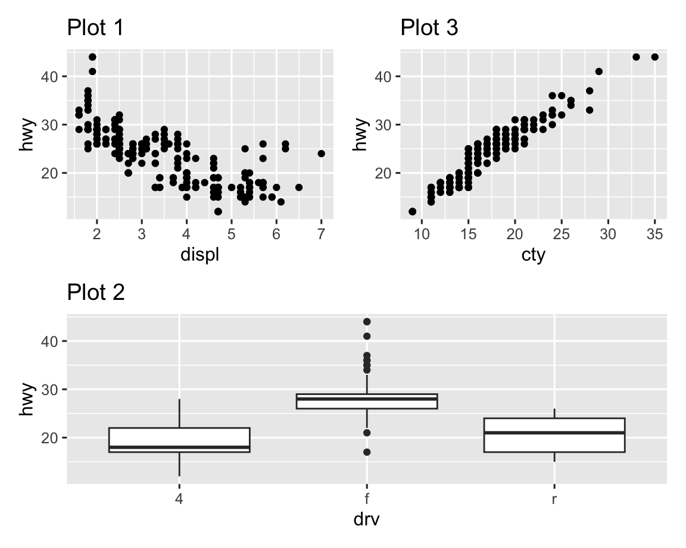
此外，patchwork允许你将多个图形的图例收集到一个共同的图例中，自定义图例的位置以及图形的尺寸，并为你的图形添加共同的标题、副标题、说明等。下 面我们创建了5个图形。我 们关闭了箱形图和散点图的图例，并将密度图的图例收集到图表顶部，使用了& theme(legend.position = "top")。请 注意这里使用了&运算符而不是通常的+。这 是因为我们正在修改patchwork图形的主题，而不是单个的ggplot。图 例被放置在顶部的guide_area()内。最 后，我们还自定义了patchwork中各个组件的高度：指南的高度为1，箱形图的高度为3，密度图的高度为2，分面的散点图的高度为4。p atchwork使用这个比例来划分你为图形分配的区域，并相应地放置各个组件。
p1 <- ggplot(mpg, aes(x = drv, y = cty, color = drv)) +
geom_boxplot(show.legend = FALSE) +
labs(title = "Plot 1")
p2 <- ggplot(mpg, aes(x = drv, y = hwy, color = drv)) +
geom_boxplot(show.legend = FALSE) +
labs(title = "Plot 2")
p3 <- ggplot(mpg, aes(x = cty, color = drv, fill = drv)) +
geom_density(alpha = 0.5) +
labs(title = "Plot 3")
p4 <- ggplot(mpg, aes(x = hwy, color = drv, fill = drv)) +
geom_density(alpha = 0.5) +
labs(title = "Plot 4")
p5 <- ggplot(mpg, aes(x = cty, y = hwy, color = drv)) +
geom_point(show.legend = FALSE) +
facet_wrap(~drv) +
labs(title = "Plot 5")
(guide_area() / (p1 + p2) / (p3 + p4) / p5) +
plot_annotation(
title = "City and highway mileage for cars with different drive trains",
caption = "Source: https://fueleconomy.gov."
) +
plot_layout(
guides = "collect",
heights = c(1, 3, 2, 4)
) &
theme(legend.position = "top")![Five plots laid out such that first two plots are next to each other. Plots three and four are underneath them. And the fifth plot stretches under them. The patchworked plot is titled "City and highway mileage for cars with different drive trains" and captioned "Source: https://fueleconomy.gov". The first two plots are side-by-side box plots. Plots 3 and 4 are density plots. And the fifth plot is a faceted scatterplot. Each of these plots show geoms colored by drive train, but the patchworked plot has only one legend that applies to all of them, above the plots and beneath the title.](communication_files/figure-html/unnamed-chunk-39-1.png)
如果你希望了解更多关于如何使用patchwork组合和布局多个图形的信息，我们推荐你浏览该包的官方网站上的指南：https://patchwork.data-imaginist.com。
11.6.1 练习
-
如果在下面的绘图布局中省略括号会发生什么？你 能解释一下为什么会这样吗？
p1 <- ggplot(mpg, aes(x = displ, y = hwy)) + geom_point() + labs(title = "Plot 1") p2 <- ggplot(mpg, aes(x = drv, y = hwy)) + geom_boxplot() + labs(title = "Plot 2") p3 <- ggplot(mpg, aes(x = cty, y = hwy)) + geom_point() + labs(title = "Plot 3") (p1 | p2) / p3 -
使用前面练习中的三个图，重新创建下面的patchwork。
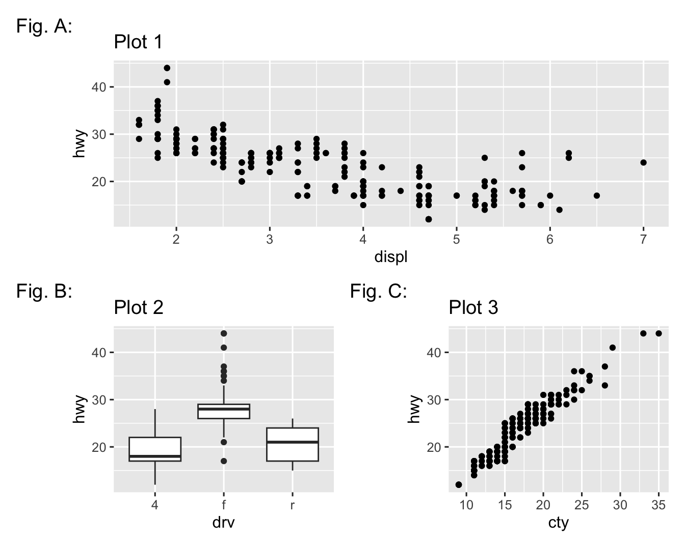
11.7 小结
在本章中，你学习了如何添加图形标签，如标题、副标题、说明以及修改默认的轴标签，使用注释在图形中添加信息性文本或突出显示特定的数据点，自定义轴刻度，并更改图形的主题。你 还学习了如何使用简单和复杂的图形布局将多个图形组合成一个图形。
虽然到目前为止，您已经学习了如何制作许多不同类型的图形以及如何使用各种技术来定制它们，但我们只是触及了使用 ggplot2 创建内容的冰山一角。如 果你想全面了解 ggplot2，我们推荐您阅读《ggplot2: Elegant Graphics for Data Analysis》这本书。其 他有用的资源还有 Winston Chang 的《R Graphics Cookbook》和 Claus Wilke 的《Fundamentals of Data Visualization 》。
您可以使用SimDaltonism之类的工具来模拟色盲来测试这些图像。↩︎